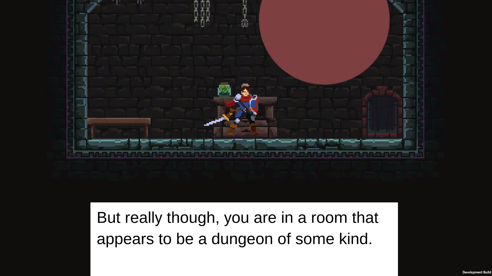

8-Bit Adventure Prototype
A Deep Dive
A small prototype I created in Unity to teach myself how to use Unity 2D.

Project Overview
A prototype I built in Unity to teach myself Unity 2D. It's got a branching dialogue system, 2D character animation, tilemap-based levels, and teleporters to move between areas, basically a sandbox for learning the core pieces of a 2D game.
Key Features
- A branching dialogue system with player response choices
- A typewriter text effect that paces itself around punctuation
- 2D character animation and movement
- Tilemap-built levels with teleporters between them
Development Details
- Role:Solo Developer (prototype)
- Engine: Unity
- Language: C#
- Status: Completed
- Platforms: Windows
Download & Source
What I worked on
A solo prototype for learning Unity 2D, where the dialogue system ended up being the part I put the most into:
- A branching dialogue system built off an interface, where NPCs can offer response choices that lead to different follow-ups
- A typewriter effect that types text out and slows down on punctuation so it reads naturally
- 2D player movement and animation, plus tilemap levels connected by teleporters
Development Insights
I built this to get comfortable with Unity's 2D tools, and it turned into a solid foundation for later projects. The dialogue system especially, the branching choices and the typewriter effect, is something I ended up reusing and improving in bigger games like Insomnia and Safe Web. It's a good example of how a learning prototype can pay off down the line.